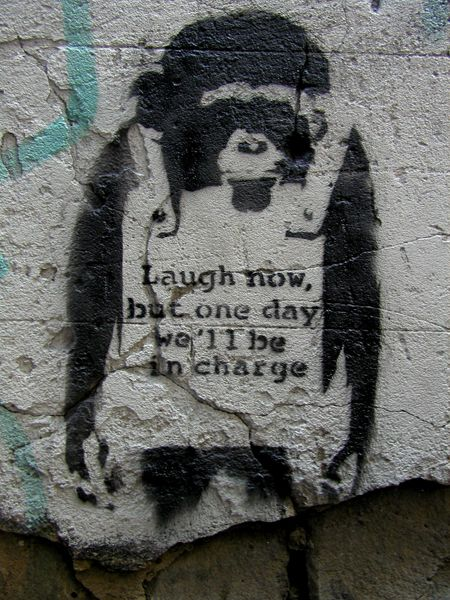

Credit
“Laugh Now” first appeared in 2002 and featured a Monkey wearing a sandwich board proclaiming ‘Laugh now, but one day we’ll be in charge’. It came right after the election to show that people did not like the person in charge.
2002-12
Spray Paint
Los Angeles, USA